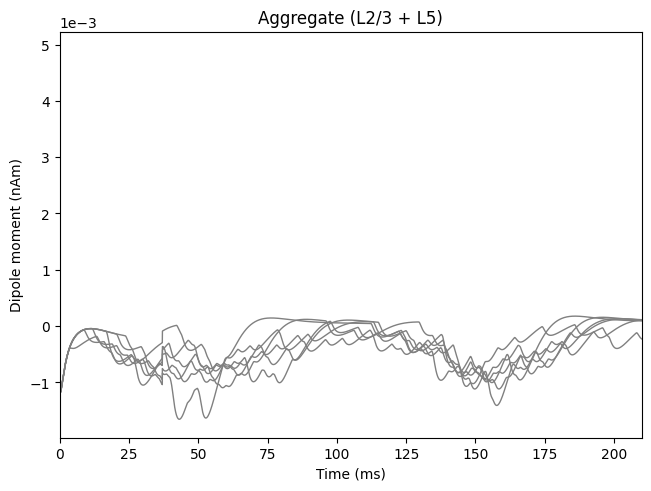

7.7: Parallelism: Using the Joblib backend
This example demonstrates how to use the Joblib backend for
simulating dipoles using hnn_core.
hnn_core can take advantage of the Joblib library
to run multiple independent simulations simultaneously
across multiple CPU processors. This is an example of
"embarrassingly
parallel" processing jobs. In HNN, this is commonly done if you want
to run many "trials" of the same simulation. Since each trial simulation
is fully independent of the other trial simulations, each trial
simulation can be run on its own CPU core. Joblib parallelism is
particularly useful if you are using batch
simulation to explore parameter spaces.
Note that to use Joblib parallelism, you need either the
conda install or the pip
Joblib Installation dependencies described in
our Installation Guide here.
Note that Joblib parallelism is distinct from hnn_core's
use of MPI
parallelism, which can be found here.
# Authors: Mainak Jas
# Blake Caldwell
# Austin Soplata
Let us import what we need from hnn_core:
import matplotlib.pyplot as plt
from hnn_core import simulate_dipole, jones_2009_model
from hnn_core.viz import plot_dipole
Following our Alpha
example, we will create our network and add a ~10 Hz "bursty"
drive:
net = jones_2009_model()
weights_ampa = {'L2_pyramidal': 5.4e-5, 'L5_pyramidal': 5.4e-5}
net.add_bursty_drive(
'bursty', tstart=50., burst_rate=10, burst_std=20., numspikes=2,
spike_isi=10, n_drive_cells=10, location='distal',
weights_ampa=weights_ampa, event_seed=278)
Finally, we will simulate using the JoblibBackend
class. You can control the number of CPU cores to use via
n_jobs, while the number of total trials to be run can be
specified by n_trials. Note that these numbers do NOT have
to match: you can ask for more trials than there are jobs available, and
Joblib will simply execute later jobs after the first batch has
completed.
from hnn_core import JoblibBackend
with JoblibBackend(n_jobs=4):
dpls = simulate_dipole(net, tstop=210., n_trials=6)
Out:
Joblib will run 6 trial(s) in parallel by distributing trials over 4 jobs.
Loading custom mechanism files from /usr/share/miniconda/envs/textbook-env-mpi/lib/python3.12/site-packages/hnn_core/mod/x86_64/libnrnmech.so
Building the NEURON model
Loading custom mechanism files from /usr/share/miniconda/envs/textbook-env-mpi/lib/python3.12/site-packages/hnn_core/mod/x86_64/libnrnmech.so
Building the NEURON model
Loading custom mechanism files from /usr/share/miniconda/envs/textbook-env-mpi/lib/python3.12/site-packages/hnn_core/mod/x86_64/libnrnmech.so
Building the NEURON model
Loading custom mechanism files from /usr/share/miniconda/envs/textbook-env-mpi/lib/python3.12/site-packages/hnn_core/mod/x86_64/libnrnmech.so
Building the NEURON model
[Done]
[Done]
[Done]
Trial 3: 0.03 ms...
Trial 2: 0.03 ms...
Trial 1: 0.03 ms...
[Done]
Trial 4: 0.03 ms...
Trial 2: 10.0 ms...Trial 3: 10.0 ms...
Trial 1: 10.0 ms...
Trial 4: 10.0 ms...
Trial 2: 20.0 ms...
Trial 3: 20.0 ms...
Trial 1: 20.0 ms...
Trial 4: 20.0 ms...
Trial 2: 30.0 ms...
Trial 1: 30.0 ms...
Trial 3: 30.0 ms...
Trial 4: 30.0 ms...
Trial 2: 40.0 ms...
Trial 3: 40.0 ms...
Trial 1: 40.0 ms...
Trial 4: 40.0 ms...
Trial 2: 50.0 ms...
Trial 3: 50.0 ms...
Trial 1: 50.0 ms...
Trial 4: 50.0 ms...
Trial 2: 60.0 ms...
Trial 3: 60.0 ms...
Trial 1: 60.0 ms...
Trial 4: 60.0 ms...
Trial 2: 70.0 ms...
Trial 3: 70.0 ms...
Trial 1: 70.0 ms...
Trial 4: 70.0 ms...
Trial 3: 80.0 ms...
Trial 2: 80.0 ms...
Trial 4: 80.0 ms...
Trial 1: 80.0 ms...
Trial 3: 90.0 ms...
Trial 2: 90.0 ms...
Trial 4: 90.0 ms...
Trial 1: 90.0 ms...
Trial 3: 100.0 ms...
Trial 4: 100.0 ms...
Trial 1: 100.0 ms...
Trial 2: 100.0 ms...
Trial 3: 110.0 ms...
Trial 4: 110.0 ms...
Trial 1: 110.0 ms...
Trial 2: 110.0 ms...
Trial 3: 120.0 ms...
Trial 4: 120.0 ms...
Trial 2: 120.0 ms...
Trial 1: 120.0 ms...
Trial 3: 130.0 ms...
Trial 4: 130.0 ms...
Trial 2: 130.0 ms...
Trial 1: 130.0 ms...
Trial 3: 140.0 ms...
Trial 4: 140.0 ms...
Trial 2: 140.0 ms...
Trial 1: 140.0 ms...
Trial 3: 150.0 ms...
Trial 2: 150.0 ms...
Trial 4: 150.0 ms...
Trial 1: 150.0 ms...
Trial 3: 160.0 ms...
Trial 2: 160.0 ms...
Trial 4: 160.0 ms...
Trial 1: 160.0 ms...
Trial 3: 170.0 ms...
Trial 2: 170.0 ms...
Trial 4: 170.0 ms...
Trial 1: 170.0 ms...
Trial 3: 180.0 ms...
Trial 2: 180.0 ms...
Trial 4: 180.0 ms...
Trial 1: 180.0 ms...
Trial 3: 190.0 ms...
Trial 2: 190.0 ms...
Trial 4: 190.0 ms...
Trial 1: 190.0 ms...
Trial 3: 200.0 ms...
Trial 2: 200.0 ms...
Trial 4: 200.0 ms...
Trial 1: 200.0 ms...
Building the NEURON model
Building the NEURON model
[Done]
Trial 5: 0.03 ms...
[Done]
Trial 6: 0.03 ms...
Trial 5: 10.0 ms...
Trial 6: 10.0 ms...
Trial 5: 20.0 ms...
Trial 6: 20.0 ms...
Trial 5: 30.0 ms...
Trial 6: 30.0 ms...
Trial 5: 40.0 ms...
Trial 6: 40.0 ms...
Trial 5: 50.0 ms...
Trial 6: 50.0 ms...
Trial 5: 60.0 ms...
Trial 6: 60.0 ms...
Trial 5: 70.0 ms...
Trial 6: 70.0 ms...
Trial 5: 80.0 ms...
Trial 6: 80.0 ms...
Trial 5: 90.0 ms...
Trial 6: 90.0 ms...
Trial 5: 100.0 ms...
Trial 6: 100.0 ms...
Trial 5: 110.0 ms...
Trial 6: 110.0 ms...
Trial 5: 120.0 ms...
Trial 6: 120.0 ms...
Trial 5: 130.0 ms...
Trial 6: 130.0 ms...
Trial 5: 140.0 ms...
Trial 6: 140.0 ms...
Trial 5: 150.0 ms...
Trial 6: 150.0 ms...
Trial 5: 160.0 ms...
Trial 6: 160.0 ms...
Trial 5: 170.0 ms...
Trial 6: 170.0 ms...
Trial 5: 180.0 ms...
Trial 6: 180.0 ms...
Trial 5: 190.0 ms...
Trial 5: 200.0 ms...
Trial 6: 190.0 ms...
Trial 6: 200.0 ms...
plot_dipole(dpls, show=False)
plt.show()
Out:
<Figure size 640x480 with 1 Axes>
